Shoutouts
Congrats to “The Juggler” for finishing a crazy 9 day bike trip across the Yukon. Truly incredible stuff!
Monday
Once I finished serving up tokens and smiles I decided somewhat on a whim to go to Mission Run Club for the first in many months. Of all the run clubs this was one of the ones I was a bit more hesitant to go to since there wasn’t a bag drop but then I said f it and went anyway. It was definitely one of the tougher runs I had done in a while, in part because I hadn’t really run seriously since my attempt at the Ultra a few weeks ago and it felt great getting back in the saddle and proving to myself that I still got it.
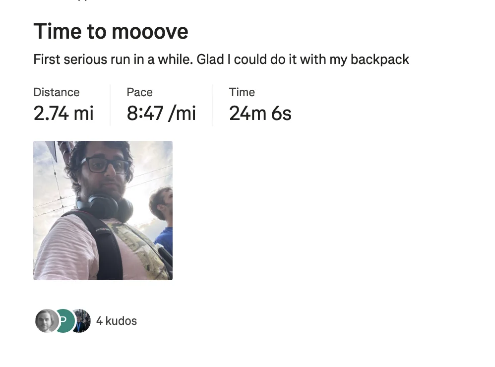
Bonus points for seeing “Let me give you a call on the world’s smallest phone” and someone else I met from trash pickup there as well.
Tuesday
Once I finished fiending the forkable I went to play Spikeball with “The Spiker,” “Aqua man,” “The French scout” and many others. Today was unique in that this doubled as a celebration for a couple there who just got engaged! I’ve been excited for their engagement the entire time I’ve known them which granted just started today but the point stands.
I had an unusually good day at Spikeball and won one of my games and lost another by two points which is a rare showing for me.
While there I talked with “The French scout” who told me about an interesting Girl Scout program she did growing up in France. The way it works is you are in a group with a bunch of people and you go on a hike from town to town following a pre planned map. You go around the countryside and stop by a bunch of small towns befriending locals along the way and ask them for food, directions, or other things. It sounds like a fun way to build confidence and navigation skills.
Apparently they have a tradition where the group starts with something like a potato and has to trade with people met along the way to get something cool or interesting. From what I understand this usually winds up being another food item of some sort.
After the Spikeball we wound up going to “Aquaman’s” house and hanging out some more there. While there I met a coworker of “The Ravenkeeper” who plays in a band and gives off indie vibes in the best possible way. She works as a salesperson and I persuaded her to come to trash pickup which means I sold a salesperson which feels like an achievement of some sort.
Wednesday
Once I finished being a menace in the meeting rooms I went to Midnight Runners with “The Thunder from down under,” “Hell Yeah,” and “Franklin”. I haven’t brought “Franklin” to a Midnight runners run in almost a year and I wanted to see if I still had that dawg in me. Also someone I saw at run club two days ago remembers me from one of the previous times I did it so I figured why not.
Overall carrying “Franklin” was easier than in the past. I remember last year when I was carrying him to “The Raja of Rhythm’s” birthday party my arms were sore carrying him for 40 minutes. Today I walked from my apartment to the office with a quick pit stop to get almond butter toast and a 30 min walk from my office to Midnight runners and my arms were completely fine.
The run itself was a bit more chaotic than usual though. For one thing I learned trying to carry both my phone and running with “Franklin” proved to be a challenge which impacted my ability to put the run on Strava. I tried to alleviate this by putting my phone in my jacket pocket only to find about a minute later I no longer had my phone! The panic here was very short lived as another runner found it and brought it to me. At that point I resolved not to Strava the run which was a bit of a bummer but oh well.
Unfortunately during the second mile I found my shin of all things hurting so I took it easy for that and the 3rd mile.
Thankfully the 4th and 5th mile I was able to do just fine. At one point “The Thunder from Down Under” tried to take “Franklin” and he shot off white fast initially which definitely impressed me; sadly he wasn’t quite able to keep that speed up the whole time and told me “That killed me. You’re fucking nuts for being able to do this” which is one of the highest compliments we can get here at Trash tales.
As is tradition a bunch of people asked me why I was doing this. I think my favorite was when I saw someone look directly at me and whisper to his friend about it. Naturally I made eye contact with them and walked right up to them. Some people like to break the ice but I think “Franklin” prefers to smash it. Some other people I talked to suggested I make an instagram page for “Franklin” which I decided to do
If people can talk about how they are plant parents or whatever then I may as well become an air purifier dad.
After the run I was talking with “The Thunder from Down Under” and at some point he mentioned the biggest run in the world is something called a park run where a bunch of people all over the world run in a park. He mentioned that every city in the world except SF participated in this fine tradition. I looked it up and I don’t think Intercourse Pennsylvania https://en.wikipedia.org/wiki/Intercourse,_Pennsylvania participates. He may have forgotten but let it be known that this newsletter speaks for Intercourse Pennsylvania!
Thursday
Unfortunately I did pay a price for running with Franklin at the gym today when I couldn’t deadlift my normal weight due to some back pain . I was gonna do 175 today but had to dial it back to 145. This means unfortunately I may not be able to bring “Franklin” to many MR events in the future but I’ll find other ways to bring him back more. If I want the Franklin instagram account to take off. On the plus side I met or exceeded all the other workouts including my arm stuff which I care about more so it isn’t the end of the world though.
After I finished HRAMing my GPUs up the wazoo I went to a bbq hosted by one of “The Fisherwoman’s” friends. She is a Muzzie who is actually very well integrated into the Muslim community (ie what my Mom who wants me to have more Muslim friends is) so I actually met a good number of Muslims at this event. As a bonus it was a KBBQ event which made it even better. The meat was quite solid, especially the lamb! It wasn’t quite as good as Kogi Gogi but it was still phenomenal and mad props to the friend for organizing an event like this, getting all the meat (and having it be halal), and being a great host.
One note there was some of the Muslims at this event had never had KBBQ in the city before because there aren’t any halal options. I said “mm interesting” without outing the fact I’ve gone to most major KBBQ spots in the city.
Afterwards I went to bar night with “The Juggler,” “The Finer things,” “The Philosopher,” “The Mosher,” “That’s nuts,” and “The Thunder from down under”. “The Juggler” went on an epic biking trip in the Canadian Yukon up to the arctic circle. 9 days from Dawson City past the Artic circle up to a place called tuktoyaktuk. He told a bunch of cool stories including hitchhiking, meeting a couple 6 times across the trip who gave him stuff, in Inuvik, the entire ground is frozen. He said if he were to give advice for a trip like this talk to everyone you see and never turn away conversation. Everyone had a story to tell. Everywhere north of Fort McPherson was built on trusses but they messed up the Churches. It’s a sign of the times really because there is no truss in the Church. Since he was up in the Arctic Circle the midnight sun was real and at midnight it looked like it was just past sunset.
Approaching the north west territories there were some rivers that ran orange / red. The permafrost can contain some heavy metals which when melted can release them into the rivers which rust.
Net a lot of cool people including a guy who got out of a coma and is biking across country in support of brain injuries.
Met a guy who immigrated from Pakistan and now has a job in Dawson city. “The Juggler” found it refreshing since this guy loves the far north unlike many. He considered it a paid vacation.
There is a berry called cloudberry that only exists up in the Arctic Circle. From what he says they taste like
Terrain was very variable could be flat and could be brutal mountains. It required a lot of food. Their snack for some of the tougher days was 3 tortillas of peanut better and jelly. One time when they were napping a gravel truck came and was skewing dust at them.
Famous cocktail that has a real human toe in it. The story goes in Dawson city where the gold rush was a lot of people lost their lives and limbs so as a dark joke they took a fallen off toe and put it in the rum. When you drink it they say “You can drink it slow or fast but you must touch the toe” you may be wondering how there are new toes but apparently an ultramarathon came through there and people lost limbs.
We got into the etymology of Carnegie Mellon at one point and while I knew Andrew Carnegie started it it turned out that it was originally the Carnegie technical institute and in 1960 it merged with the Mellon research institute which was named after Andrew and Richard Mellon.
Also I was asked what the capital of Australia is by “The Thunder from Down Under”. I thought it was Perth but I learned it’s some city I never heard about called Canberra. Like why isn’t it one of the 3 cities I’ve heard of?! Apparently they decided to put it there because it’s halfway between Sydney and Melbourne.
After the bar we went to a burger place who’s big claim to fame is that Anthony Bourdain said it was his favorite burger place in SF. Surely they wouldn’t overuse that right?
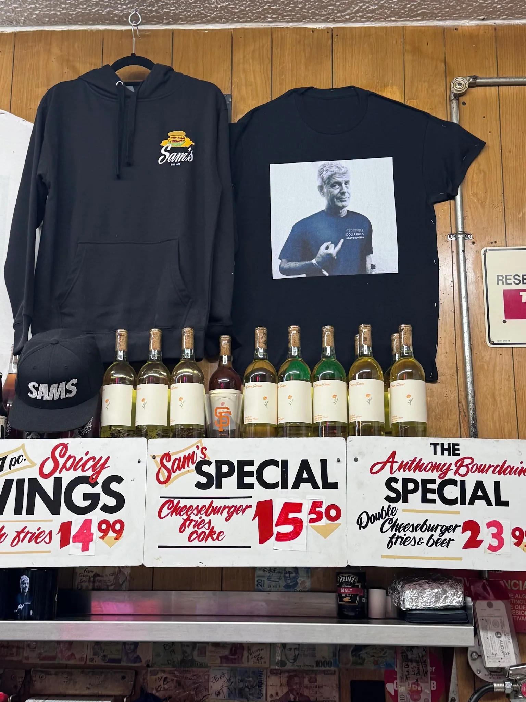
Personally I found the burger to be too dry for my liking. If I wanted something really dry I would just go with “The Philosopher's" wit.
Friday
Originally when I woke up this morning I briefly flirted with the idea of going to Salty Dogs run club but decided against it one second later. I do want to go one of these days but not when I end bar night at midnight the night before.
After I spend a day touching keyboard I meet up with “The Quant”. I took him to a sandwich spot near my apartment which I haven’t been to in years and I remembered why I liked it. The roast chicken and pesto was a killer combination.
We walked around in GGP for a while and talk about life. He’s going to be moving to Hong Kong by the end of the year and while I’m very happy since he’s so excited about it, that does mean I will need a new left hand soon and I will miss him greatly.
Later I go to “The Politician’s” quarterly bar crawl with “The Philosopher,” “The Juggler,” “Top of the rope” and a bunch of other people. This edition of the bar crawl had us in downtown SF starting at a tiki bar called Pacific Cocktail haven. While there I met this one guy who is making his own board game that is a mix of Risk and Catan which I think of as Risky Catan but somehow that comes off a bit more adult than I intended. This bar had a wide variety of drinks (none of which I had of course), but some of them seemed quite interesting including a pickle juice drink and some matcha drink. It did get a bit crowded for the space but that’s nothing new.
Afterwards we migrated to another bar called 620 Jones. This bar had a lot of space and felt very well lit which was great. One amusing tidbit was they had the chimera ant arc of Hunter x Hunter playing on the tv which was some real tonal whiplash when contrasted with the bar crawl.
While at this bar “The Juggler” plays some chess with one of “The Philosopher’s” highly rated chess friends on chess.com which was quite fun to see. Unfortunately he didn’t win any matches but he had a lot of fun which makes him a winner in my books. And he crushed me when we played afterwards :D.
At this point me, “The Philosopher,” and “The Juggler” took a break from the bar crawl to go grab some food. We went to the nearby Pearls Phat burger. There I grab a burger and have them take out the bacon, cheese, lettuce, and tomato and as a bit “The Juggler” gets the exact same burger but with extra bacon, cheese, lettuce, and tomato which ticked me.
We then rejoin the bar crawl at the next bar Peacekeeper. We wound up getting there before the rest of the crawl so the 3 of us played a bunch of skee-ball. Eventually we all converge on the strategy of trying to get as many balls in the small 100 point buckets as we possibly can which works to mixed results. On one of his runs “The Juggler” killed it and got 460 which was huge.
Once we finish the rest of the crawl shoes up and we talk a bit more before deciding to head out and go on a side quest. One thing you may not know is that “The Philosopher” and I have a standing deal where I will try one alcoholic drink of his choosing. He had been thinking for over a year which drink it should be because he wants it to be something I like and he floats the idea of an Arnold Palmer.
We head to a dive bar in the Tenderloin known as the Geary club to try and find one. While the bartender there says he can’t make one I do find the change of pace from the yuppies I encounter at a lot of other bars in SF to be refreshing. We hang out there for a while before trying another cocktail bar which unfortunately had last call for cocktails.
We may be short on Arnold Palmers but not vibes so we then walk back to “The Philosopher’s” place. On the way there I have a run in with “Breaking it down” and another friend from that Google group. While I’ve definitely run into my fair share of friends in the wild this was the first time it happened at 2 in the morning which hit different in a very funny way. We then get to “The Philosopher’s” place where I take an Ito en and have all of a few sips and sleep on his couch for half an hour and learn more about old fashions in the process. I wish I could have been more active for the last part of the conversation but at 3am I am completely drained.
Saturday
I wake up and find a potato in my fanny pack
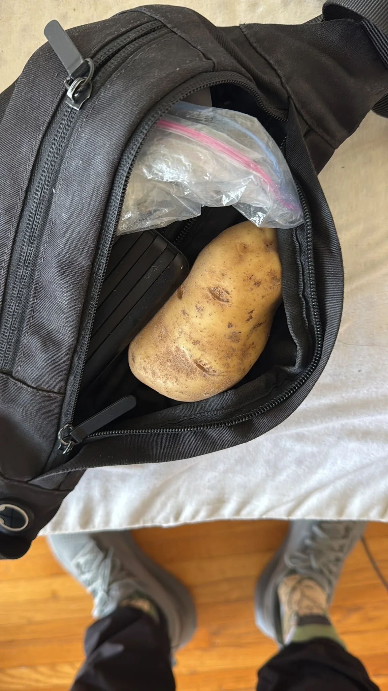
I was confused for about half a second before remembering last night as I was leaving that “The Philosopher” offered “The Juggler” a potato and he must have put one in my bag while I was sleeping.
THIS WAS EXCELLENT!! A wonderful way to start the day. I thought about what to do with this potato before realizing that the solution was obvious. I think this potato symbolizes the fact that in the journey of life you meet so many cool and interesting people so I want to honor that by passing it on. But I don’t just want to do that. I want to imbue the potato with a sense of character and richness so I named the potato Peter and I want to pass Peter on to someone else and challenge the next person to come up with a fun fact about Peter and add to the lore of this potato.
The person that immediately comes to mind is “The Big YT short” who I will be seeing later today for Volo soccer.
But before that I go to trash pickup with “Let me give you a call on the world's smallest phone,” “The Politician," “The Grandma,” “The Beekeeper” and a bunch of others.
While at trash pickup I got into a discussion with someone about what it would take to support a trash pickup of 500+ people. This was first framed as “How can you expect the trash pickup to scale to 500 people with the current practices?” I had a knee jerk reaction against this since I don’t think everything has to scale and I like the small size but as he was talking about it I became more convinced that a once a year block party style trash pickup could be interesting. As we were having this discussion we ran into a couple people thanking us for doing it.
As we were talking with them I learned that one of them found their apartment through trash pickup. And as I talked further it’s because I met this person at a previous pickup and connected them with someone who did housing stuff in Mission leading to them getting their apartment which felt like a really fun full circle moment.
From there I went to my first game in the Volo soccer league with “The Big YT short,” “Always up for a disc-ussion,” “Breaking it down” and a bunch of others. When I got there we did some basic warmups which consisted of standing in a circle and passing the ball between each other. I’m not the best of course but I’m starting to get a feel for this which hopefully means I will do well in the actual game.
Our team name is PTSD because that’s what we’re gonna give the opponents! Let’s go! Let’s go!
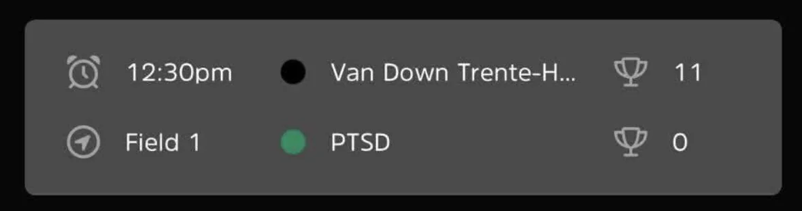
As you can see things may not have gone exactly according to plan. In our defense though some people in the other team had manbuns and spoke Spanish so I feel like we were screwed from the start.
In all seriousness though yeah we definitely we’re beginners. I in particular was one of if not the worst player on the team. But that being said I had a lot of fun. It was cool getting a feel for how the actual game works.
One lowlight came when I was playing defense and a ball came right for the ol family jewels and reminded me why a groin card was important.
Here’s a live photo of me at the moment of impact.
After the game we did some more practice drills. My favorite of which was a king of the hill one where we played 2 v 2 with one team attacking and the other defending. If the attacking team got a goal they would boot the defenders out and become defenders. If the defenders got possession of the ball the attackers would go back and new attackers would come out. Me and my teammate for this had quite the run and cycled through all the teams trying to attack multiple times. Through this I realized my best soccer skill is pressuring people on defense. Who would have thought my time getting up in peoples faces and annoying them would pay off? Maybe I can throw in an advanced mechanism to disrupt their rhythm where I hit em with a terrorist joke. They’ll be so stunned I can easily steal the ball from them.
All in all I had quite a bit of fun and I want to see if by the end of the league I can actually be reasonably ok at soccer!
I go home and take an uncharacteristic nap and then I go to Duboce park to catch up on the newsletter.
From there I head to a party hosted by a new friend “Spaced out”. Initially I was tired from my lack of sleep and kinda wanted to go home and chill but I’m really glad I went! Everyone there was super cool and I had a great time talking with everyone. One interesting thing is that she is close with a bunch of coworkers leading it to be an uncharacteristically coworker dense party. Through them I learned that this company brings satellites into space for the purpose of providing internet which is pretty cool. Apparently because of the nature of their job they work different shifts including some bizarre ones of 11pm-7am. One of the people at this party had to leave after an hour or so to make it to that shift in fact.
While at the party I saw this cute girl talking to someone and joined in their conversation and wound up really vibing with both of them. Even though I was only romantically interested in one of them I still found the other super cool and I wanna be friends with her too. We talked for quite a while about all sorts of things like building community, hobbies, and the differences between the east and west coast. Thanks to my time in “The Fisherman” school of differences I was able to keep up with and contribute where I would otherwise be out of my weight class.
As she left I got her insta and resolved to ask her out. One piece of advice I’ve gotten sometimes is that my odds of randomly asking out people I meet is not likely to have high odds of success but I reckon that I don’t lose much by trying. Another thing I really want to avoid is the “Is this a date?” Situation where the other party is wondering how I see things which is why I resolve to explicitly ask her on a date.
Sunday
I went to half of trash pickup today with “Let me give you a call on the world’s smallest phone” and some more friends. I could only stay for half of pickup today as I decided to go to a Muslim group meetup / nature walk happening at Fort Funston. As I sprint to my uber I get a message from the girl I asked out saying that she would rather be friends which was fine. She also said she was surprised because she thought I was into the other girl instead which is funny and made me chortle and also made me think perhaps I need to be more clear about my intent in these situations. I’m not sure exactly what it was that made her think so but perhaps if we do wind up becoming closer friends I can ask her because I am curious.
The meetup itself was pretty good. Everyone there was pretty nice and definitely down to socialize. I met this one guy who does archery which I found quite fascinating. He said he used to run and is trying to get back into it; once he gets more experience under his feet I want to invite him to run club with me.
One interesting thing about this group was the leader said that the girls would start and 20 seconds later the guys would follow. This took me back to when I would go to family friend gatherings at my parents place and I saw that men and women almost always talked separately. While there were some intergender interactions they were on the rarer side at this event.
I think some people in the group may not be a big fan of dogs because the host said they wouldn’t pick this spot again in part because of all the dogs. I know that some schools of Islam are anti dog and not in the same way that I may suggest to eat dogs but out of a genuine dislike because of Islamic teachings. Personally I never grew up being taught strongly about dogs but I know some Muslims do follow that much like how I’m not strict about halal for example.
Speaking of it is interesting how many Muslims take halal food more seriously than I do. When I was talking with someone he said one of his favorite icebreakers is “What is your favorite Halal burger in the city?” a question I don’t think about much since I never let that stop me; growing up neither me nor my family really put that much stock in that beyond not eating pork.
Afterwards some of the folks wanted to get lunch but for once I didn’t really want to join and instead decided to go on a nice solo walk from Richmond to the Mission. It was a lovely day and I hadn’t had time to go on a long walk by myself and be alone with my thoughts. This was one of my favorite things back when I was funemployed and I’m glad I was able to do this again.
When I got to the Mission I saw a girl hanging up posters like this
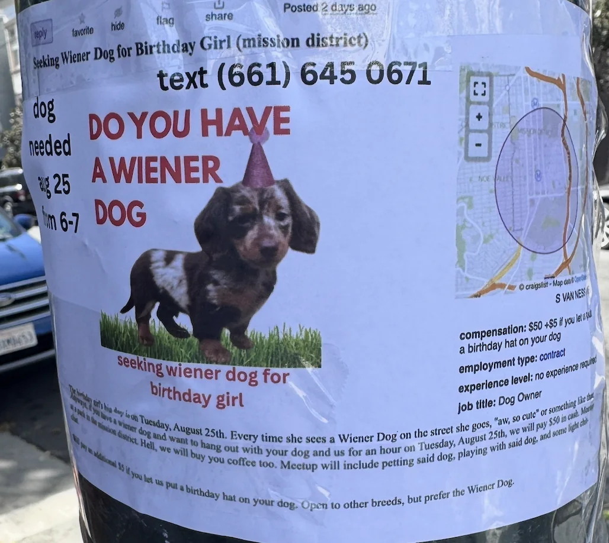
I asked her about it and she said she wasn’t sure if she would find it. I toddler she would because she has that dog in her. Between that and the people I saw yesterday in hotdog costumes that makes two times over this weekend I told some strangers I think they have that dog in them and I’m not entirely sure what that says about me.
On my way back home I heard this one guy on the bus say “If you aren’t finding things to laugh at in life you aren’t paying enough attention”. I love this quote and want to end with it as a way to encourage all of you and especially me to think about this and always find time to laugh at the little things.
Personal training progress for the week
The dot plots below show every exercise logged through 8/20/2026; later dates are excluded. The x-axis is time, the y-axis is logged weight, and dot size represents reps or logged time. Bodyweight sets appear on the BW baseline.


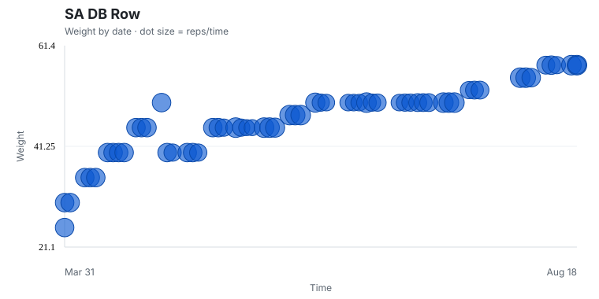
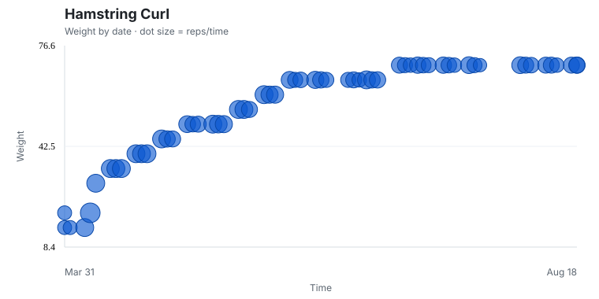
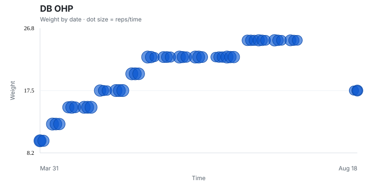
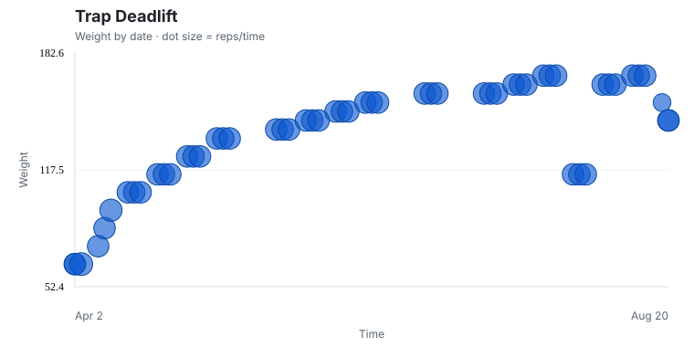
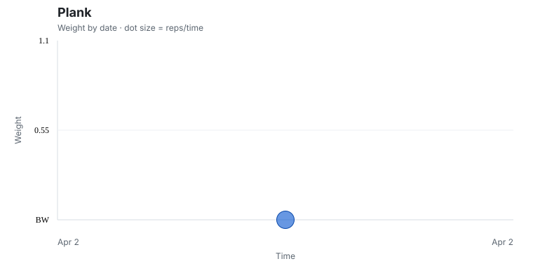
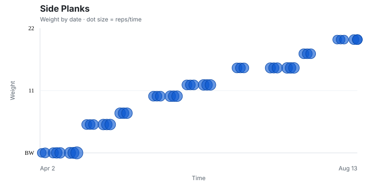
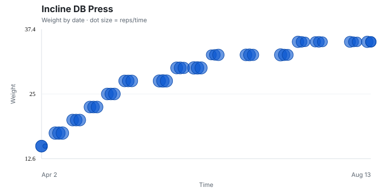
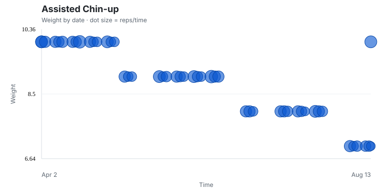
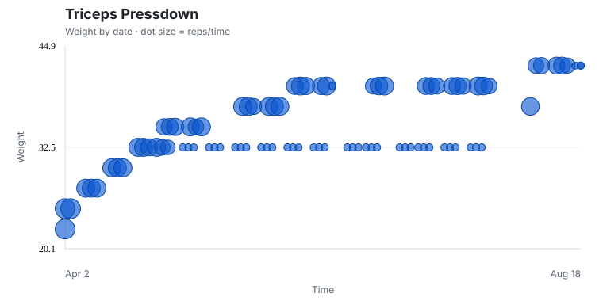
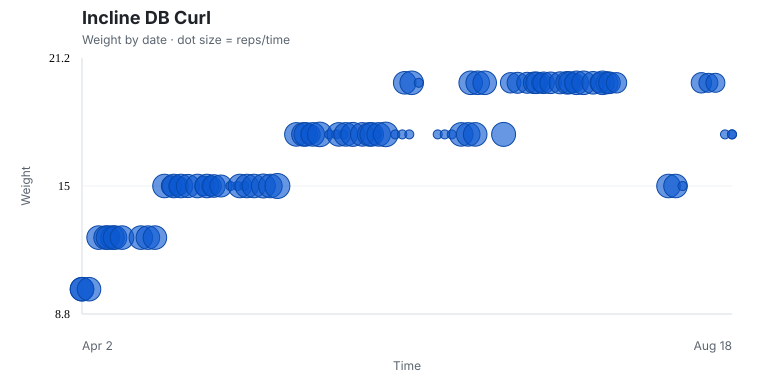
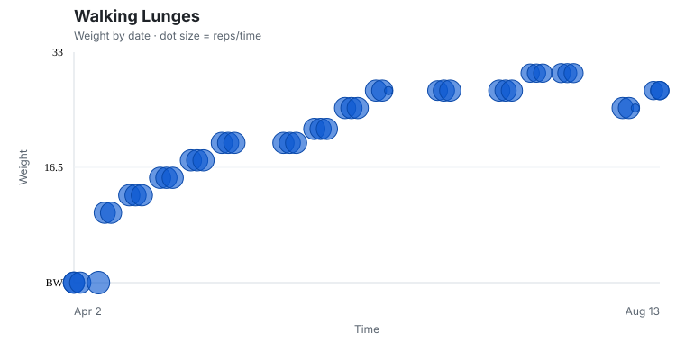
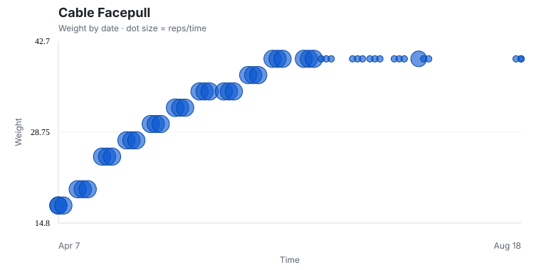
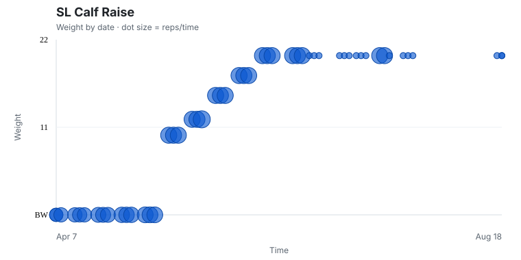
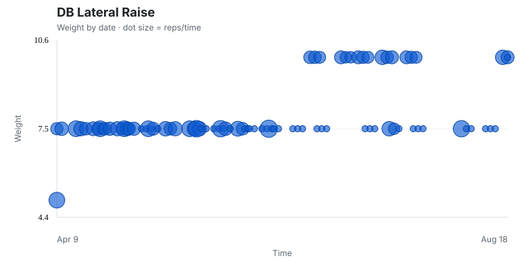
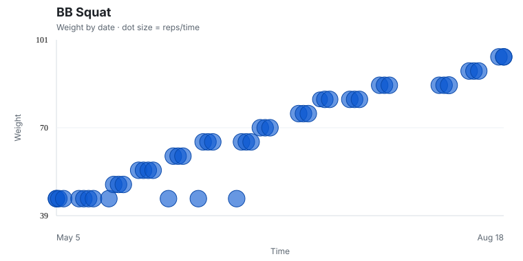
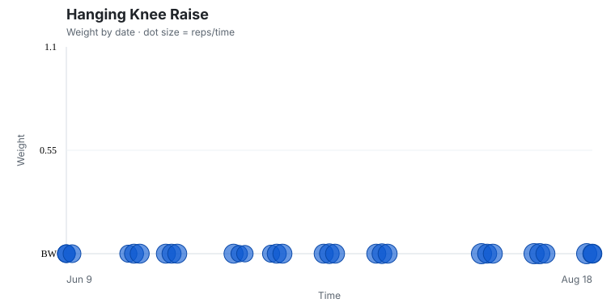
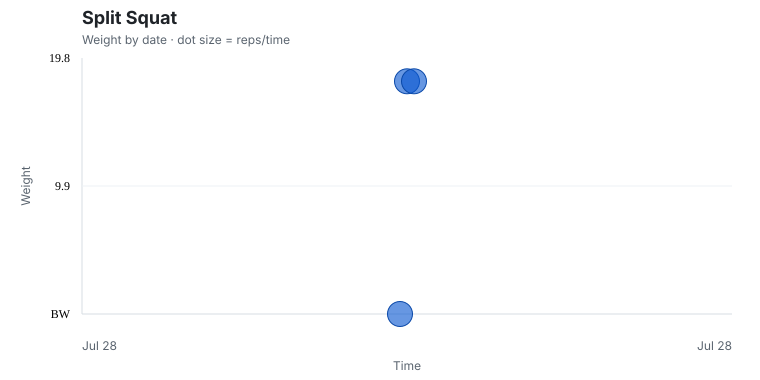
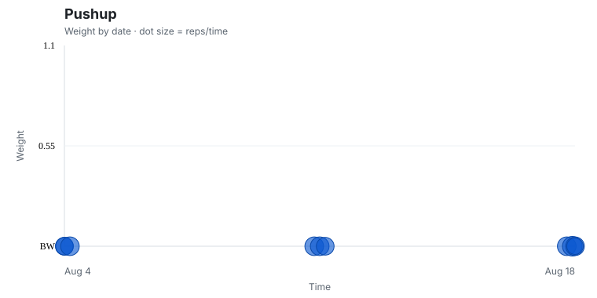
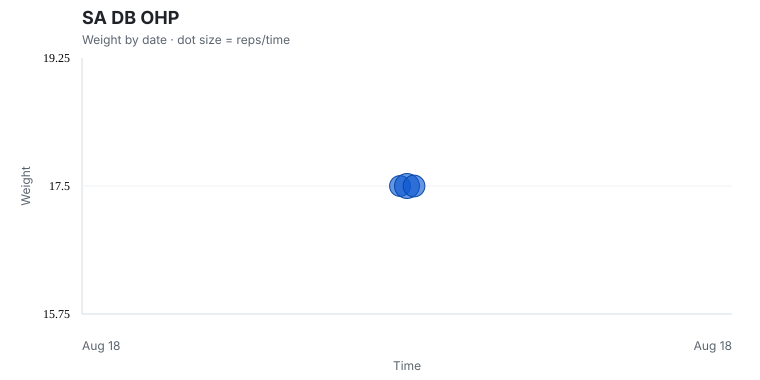